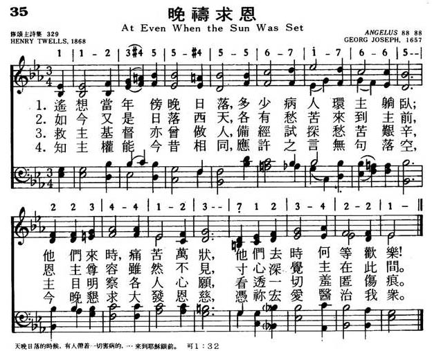
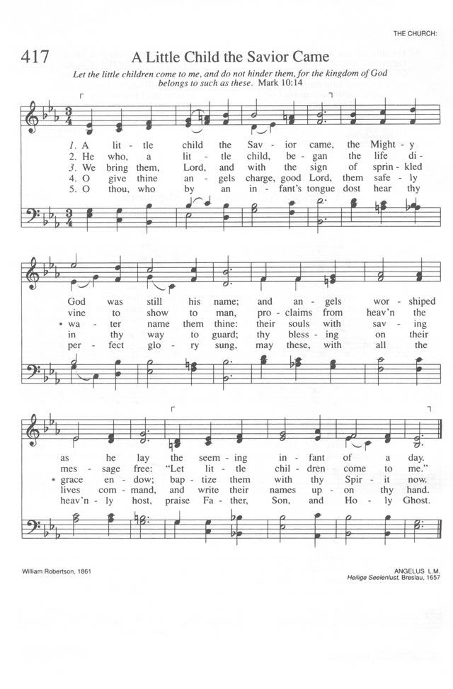
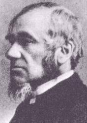

LX1299
At Even When The Sun Was
Set _
Twells
035晚祷求恩
颂新
|
|
|
|
1 At even, ere the sun was set,
the sick, O Lord, around thee lay;
O in what divers pains they met!
O with what joy they went away!
2 Once more 'tis eventide, and we
oppressed with various ills draw near;
what if thy form we cannot see?
we know and feel that thou art here.
3 O Saviour Christ, our woes dispel;
for some are sick, and some are sad,
and some have never loved thee well,
and some have lost the love they had;
4 And some have found the world is vain,
yet from the world they break not free;
and some have friends who give them pain,
yet have not sought a friend in thee;
5 And none, O Lord, have perfect rest,
for none are wholly free from sin;
and they who fain would serve thee best
are conscious most of wrong within.
6 O Saviour Christ, thou too art man;
thou hast been troubled, tempted, tried;
thy kind but searching glance can scan
the very wounds that shame would hide.
7 Thy touch has still its ancient power;
no word from thee can fruitless fall:
Hear, in this solemn evening hour,
and in thy mercy heal us all.
Source: Ancient
and Modern: hymns and songs for refreshing worship #13
|
035晚祷求恩
1.遥想当年傍晚日落，多少病人环主躺卧；
他们来时，痛苦万状，他们去时何等欢乐！
2.如今又是日落西天，各有愁苦来到主前，
恩主尊容虽然不见，寸心深觉主在此间。
3.救主基督亦曾做人，倍经试探愁苦艰辛，
主目明察个人心愿，看透一切羞匿伤痕。
4.知主权能今昔相同，应许之言无句落空，
今晚恳求大发恩慈，凭你宏爱医治我众。
|
|
https://www.mred365.cn/szxg/7038.html

ANGELUS
https://hymnary.org/hymn/TH1990/page/436

|
|
|
|
LX1299
At Even When The Sun Was
Set
035晚祷求恩
颂新
|
Short Name: |
Henry Twells |
|
Full Name: |
Twells, Henry, 1823-1900 |
|
Birth Year: |
1823 |
|
Death Year: |
1900 |
Twells, Henry,
M.A.,

was born in 1823, and
educated at St. Peter's College, Cambridge. B.A. 1848, M.A. 1851. Taking
Holy Orders in 1849, he was successively Curate of Great Berkhamsted,
1849-51; Sub-Vicar of Stratford-on-Avon, 1851-54; Master of St. Andrew's
House School, Mells, Somerset, 1854-56; and Head Master of Godolphin School,
Hammersmith, 1856-70. In 1870 he was preferred to the Rectory of Baldock,
Herts, and in 1871 to that of Waltham-on-the Wolds. He was Select Preacher
at Cambridge in 1873-74, and became an Honorary Canon of Peterborough
Cathedral in 1884. Canon Twells is best known by his beautiful evening hymn,
"At even ere the sun was set." He also contributed the following hymns to
the 1889 Supplemental Hymns to Hymns Ancient & Modern:—
1. Glorious is Thy Name, O Lord. The
Name of God.
2. Know ye the Lord hath borne away? Ascension.
3. Not for our sins alone. Plea
for Divine Mercy.
4. The voice of God's Creation found me. The
Word of God a Light.
-- John Julian, Dictionary
of Hymnology (1907)
Notes
At even ere
the sun was set. H. Twells. [Evening.] Written for and
first published in the Appendix to Hymns
Ancient & Modern, 1868, in 7 stanzas of 4 lines. It was originally
in 8 stanzas. The omitted st, No. iv., which has since been reinstated
in Church Hymns, 1871, Taring's Collection,
1882, and others, reads:—
"And some are
pressed with worldly care,
And some are tried with sinful doubt;
And some such grievous passions tear,
That only Thou canst cast them out."
Since the first
publication of the hymn in Hymns Ancient & Modern in
1868, it has been included in almost every collection published from
that date both in Great Britain and America. It ranks with the most
popular of evening hymns. The text which has the widest acceptance is
that of Hymns Ancient & Modern. Three changes,
however, in the opening line are found in the collections.
(1) "At even, ere 'the sun did set";
(2) "At even, when the sun was set";
and
(3) "At even, when the sun did set."
The last reading is adopted in Thring's Collection,
and, together with the second, is based upon the passage in St. Mark i.
32, "At even, when the sun did set, they brought unto Him all that were
diseased," &c, in preference to the reading in St. Luke iv. 40, “Now,
(revised, ‘And’) when the sun was setting." This preference has the
support of the majority of commentators both ancient and modern, the
ground taken being the acknowledged unlawfulness (with the Jews) of such
a gathering of diseased persons until the sun had gone down, and the
Sabbath was ended. The question was discussed by Mr. Twells and another
in the Literary Churchman, June 9 and 23, 1882.
The weight of evidence given therein was strongly in favour of the
amended reading. Authorized text in Church Hymns.
-- John Julian, Dictionary
of Hymnology (1907)
Tune Information
|
Title: |
ANGELUS (Joseph) |
|
Composer: |
Georg Joseph (1657) |
|
Meter: |
8.8.8.8 |
|
Incipit: |
11234 55455 67176 |
|
Key: |
E♭
Major |
|
Source: |
Cantica Spiritualia, 1847 |
|
Copyright: |
Public Domain |
|
Short Name: |
Georg Joseph |
|
Full Name: |
Joseph, Georg, 1630-1668 |
|
Birth Year
(est.): |
1630 |
|
Death Year
(est.): |
1668 |
Born: Probably circa 1630,
Breslau, Silesia (now Wrocław, Poland).
Died: Circa 1668.
A musician in the service
of the Prince-Bishop of Breslau in last half of the 17th Century, Joseph
collaborated published five hymn volumes with Johann Scheffler.
Sources
Erickson, p. 325
Stulken, p. 218
Music: ANGELUS
"When the sun was setting, all those who had any that were sick with various
diseases brought them to Him; and He laid His hands on every one of them and
healed them" (Lk. 4.40)
INTRO.:
An
evening song which draws its thoughts from this incident in the life of Jesus is
"At Even, When the Sun Was Set." Originally in eight stanzas, the text was
written by Henry Twells, who was born at Ashted, England, near Birmingham, on
Mar. 23, 1823. After being educated at St. Peter’s College, Cambridge, he became
an Anglican minister and served at Great Berkhamstead from 1849 to 1851 and then
at Stratford-Upon-Avon from 1851 to 1854. Then, following two years of being
master of St. Andrew’s House Schools at Mells in Somersetshire, from 1854 to
1856, he went to Hammersmith, England, where he was headmaster of Godolphin
School from 1871 to 1890. While there, he provided these words for the appendix
of the 1868 edition of Hymns
Ancient and Modern at the request of the editor Henry Baker.
They were produced one afternoon while his students were writing an exercise
during an examination. It was late in the afternoon, and one student was
especially long. The teacher had to stay until he was done, and as the sun was
beginning to drop below the horizon, Twells gazed out of the window. His
thoughts turned to the story of Jesus healing the sick at evening.
The original first line, "At even, e’er the sun was set," was altered to its
present form in 1882 for the Church
of England Hymn Book by the editor Godfrey Thring (1823-1903).
The change resulted from a discussion as to whether the Jewish law allowed cures
to be made before rather than after sunset. Twells insisted that the original
language demanded his use of the word "e’er" (ever or before), but Thring
changed it to "when." In 1890, Twells moved to Bournemouth, the most
frequented resort for invalids on the English Channel Coast, where he built and
partially endowed the Church of St. Augustine, remaining there until his death
on Jan. 19, 1900.
The tune (Eden) which is usually associated with it was composed by Timothy B.
Mason (1801-1861). It was first published in 1836. Timothy Mason was a brother
of the well-known American hymntune composer, Lowell Mason (1792-1872). Among
songbooks published by members of the Lord’s church during the twentieth century
for use in churches of Christ, this hymn appeared in the 1922 appendix of the
1921 Great
Songs of the Church (No. 1) and the 1937 Great
Songs of the Church No. 2 both edited by E. L. Jorgenson. The
text was used in the 1963 Christian
Hymnal edited by J. Nelson Slater, with a tune (Eucharest) by
Isaac Baker Woodbury. Today is found in the 1986 Great
Songs Revised edited by Forrest M. McCann, with a tune (Abends)
by Herbert S. Oakley; and in the 1992 Praise
for the Lord edited by John P. Wiegand, where the Mason tune
is returned; as well as the 2007 Sacred Songs for the Church edited by William
D. Jeffcoat.
The hymn reminds us of the blessings that we can seek from Christ each evening.
I. Stanza 1 goes back to the scene where Christ healed people in the evening
"At even, when the sun was set, The sick, O Lord, around Thee lay;
O in what divers pains they met! O with what joy they went away!"
A. Even after what was probably a busy day, Jesus was willing to use His
evening hours to help people: Matt. 8.16-17
B. Those who came had divers pains–they are described as being sick and demon
possessed: Mk. 1.32-34
C. Yet, with what joy they must have gone away, even as others whom Jesus
healed–cf. Lk. 5.17-26
II. Stanza 2 makes application of this incident to us today
"Once more ’tis eventide, and we, Oppressed with various ills, draw near;
What if Thy form we cannot see, We know and feel that Thou art here."
A. Because the stanza begins, "Once more ’tis eventide," this song would not be
an appropriate one for morning worship, but was obviously intended for an
evening service. And today, like those of the text, when we meet together for an
evening service, we often come with various ills, both physical and spiritual:
Jas. 5.13-16
B. They came into the literal, personal presence of Jesus on earth, whereas we
cannot see His physical form as they did: Jn. 20.29, 1 Pet. 1.7-8
C. Yet, because of His promises, we can still know and feel that He is among
us: Matt. 18.20, 28.20
III. Stanza 3 is a prayer that Christ will bless us as we come to Him
"O Savior Christ, our woes dispel; For some are sick and some are sad,
And some have never loved Thee well, And some have lost the love they had."
A. Jesus Christ is able to dispel all our woes, for He is the Sun of
Righteousness who has arisen with healing in His wings: Mal. 4.2
B. Some of our woes pertain to the physical things of this life which sometimes
make us sick and sad; and while Jesus has never promised to remove all of these
things from us, He does promise to give us grace to help us bear our
infirmities: 2 Cor. 12.7-10, Heb. 4.15-16
C. And some of these woes are such that they often cause people not to love the
Lord or to lose the love that they had, and Jesus also wants to help restore
these to a right relationship with Him: Gal. 6.1, Jas. 5.19-20
IV. Stanza 4 is a confession of weakness and sin in our lives
"And none, O Lord, have perfect rest, For none are wholly free from sin;
And they who fain would serve Thee best Are conscious most of wrong within."
A. This is actually stanza 6 of the original poem, stanzas 4-5 usually being
omitted. In this life no one has perfect rest, since God’s final rest will not
be experienced until after this life is over: Heb. 4.8-9, Rev. 14.13
B. The reason why this is so is that in this life none are wholly free from
sin. The fact is that all have sinned: Rom. 3.23
C. While Christians do not continue to live in sin, even those who seek to
serve the Lord as faithfully as they can are conscious of the fact that they
still have to struggle with the problem if sin in their lives: 1 Jn. 1.7-9
V. Stanza 5 explains the basis upon which we can still have hope in spite of our
sin
"O Savior Christ, Thou too art man; Thou hast been troubled, tempted, tried;
Thy kind but searching glance can scan The very wounds that shame would hide."
A. Jesus Christ, the Word who was God, became flesh, a man: Jn. 1.1, 14
B. As a man, He was troubled, tempted, and tried: Heb. 2.17-18
C. Therefore, by His own experience, He fully understands the problems that we
face in life, so that we can cast all our cares on Him: 1 Pet. 5.7
VI. Stanza 6 says that therefore we can still look to Him for help
"Thy touch has still its ancient power; No word from Thee can fruitless fall:
Hear, in this solemn evening hour, And in Thy mercy heal us all."
A. Although Jesus does not literally touch us as He did those who came to Him
during His earthly life, the same power that enabled Him to heal physical
illnesses then is still available to us in the gospel: Rom. 1.16
B. Thus, through His revealed word, which cannot fruitless fall, He provides
for all our spiritual needs: 2 Tim. 3.16-17
C. And by it, we can look to Him for the mercy that we need to heal us of all
that would keep us from a right relationship with God: Eph. 2.5-9, Tit. 3.5
CONCL.:
The two stanzas which are universally omitted, numbers 4 and 5 in the original
poem, are here given for your consideration.
4. "And some are pressed with worldly care, And some are tried with sinful
doubt;
And some such grievous passions tear, That only Thou canst cast them out."
5. "And some have found the world is vain, Yet from the world they break not
free;
And some have friends who give them pain, Yet have not sought a Friend in Thee."
As I have said before, many of these older hymns are no longer as familiar,
having been replaced first with gospel songs and now with the "praise choruses"
that seem to be so popular. As a result, the language with which we express the
thoughts of our hearts to God in song is becoming increasingly impoverished.
However, hymns such as this can still be very useful to remind us that we should
continue to seek the Lord "At Even, When the Sun Was Set."
https://hymnstudiesblog.wordpress.com/2008/03/19/quotat-even-when-the-sun-was-setquot/